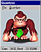
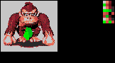
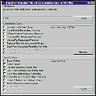
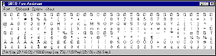
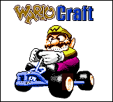

The following support for both GBTD
and
GBMB is available:
Gameboy Color
Tiler (Windows EXE)

This application will convert color bitmaps with more than 4 colors to a format
which can be used by Gameboy Color; it is fully configurable and gives gradual
results, so the longer you wait, the better the quality. It directly outputs to
a GBR file, so you can use GBTD to do the final touchups and export the picture
to your own format. This tool was not written by me, nor is it stored on my
site; you can get it at
Digital
Infinity.
GBAU10.ZIP: Auto Update
specification, version 1.0 - 5K (Word document)
Both GBTD and GBMB have a feature called "Auto Update", through which changes made in a tileset in GBTD are immediately reflected in GBMB. This feature is actually not restricted to my own tools; this document specifies how this process works, so that you can make your own tools respond in the same way.
PALRED06.ZIP: PALette REDucer
version 0.6 - 41K (Dos EXE)

This application will convert color bitmaps with more than 4 colors to a format
which can be used by both Gameboy Color as well as the original Gameboy. It
directly outputs to a GBR file, so you can use GBTD to do the final touchups
and export the picture to your own format. This tool was not written by me, but
by WolfWings.
GBRS9906.ZIP: GBR
File format specification, June 1999 - 7K (Word document)
Contains the specification of the format of a GBR-file, as generated by GBTD. This document supercedes the document which is part of GBRDK.
GMAN039A.ZIP:
Gameman Gameboy Tile & Map Optimizer/Exporter version 0.039a - 29K (Windows
EXE)

This helper application for GBTD and GBMB converts "standard" tile &
map-sets to sets containing no reduntant tiles. It can even optimize using the
flip-settings of the GBC. Next to this, it has some extra goodies which can be
used to change tile and map-sets. This tool was not written by me, but by
Jeremy Evers. It requires the MFC support library.
GBFONTA1.ZIP: GBTD Font
Assistant version 1.0 - 9K (Windows EXE)

This is a helper application for GBTD; it let's you import fonts from Windows
into GBTD, making them available to the Gameboy. Note that this application was
made by Anaerob, not by me.
WC.ZIP: WarioCraft - 18K (ROM and GBDK
source)

WarioCraft demonstrates how to show a GBC full-screen picture using GBTD, GBMB
and GBDK. Although it is C-source, it gives a detailed explaination of some of
the export-functions of GBTD and GBMB, so it is also an interresting read for
Assembly-programmers.
GBMBCN01.ZIP: GBMB Converter
version 0.1 - 132K (Windows EXE)
This tool will convert GBM-files made by GBMB version 0.9 and lower to the new format used by GBMB version 1.0 and higher.
GBMS9910.ZIP: GBM
File format specification, October 1999 - 9K (Word document)
Contains the specification of the format of a GBM-file, as generated by GBMB 1.0 and higher (lower versions use a different format).
GBTDLIB1.ZIP: GBTD Library version 1
- 2K (RGBASM Source)
This library has functions which will load tiles generated by GBTD into VRAM. It can handle compressed or un-compressed, 4 or 2-color tiles and works correctly on a real Gameboy. This library requires GB4Real, so download that also if you do not have it already.
GBRDK10.ZIP: GBR Development
Kit version 1.0 - 27K (MS Word Document and MSDOS EXEs)
If you are interested in doing more with GBR files, this package is just for you. It contains full file format specifications of GBR files. It also contains a GBR file information retriever and a compacter.